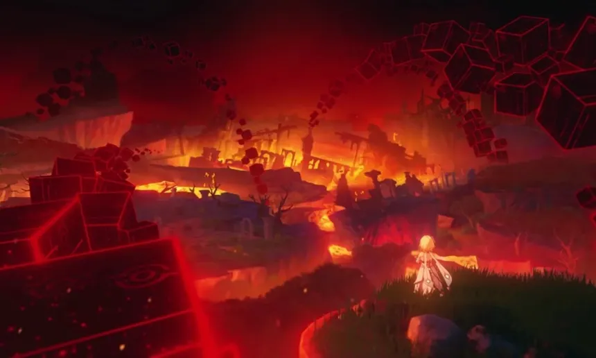
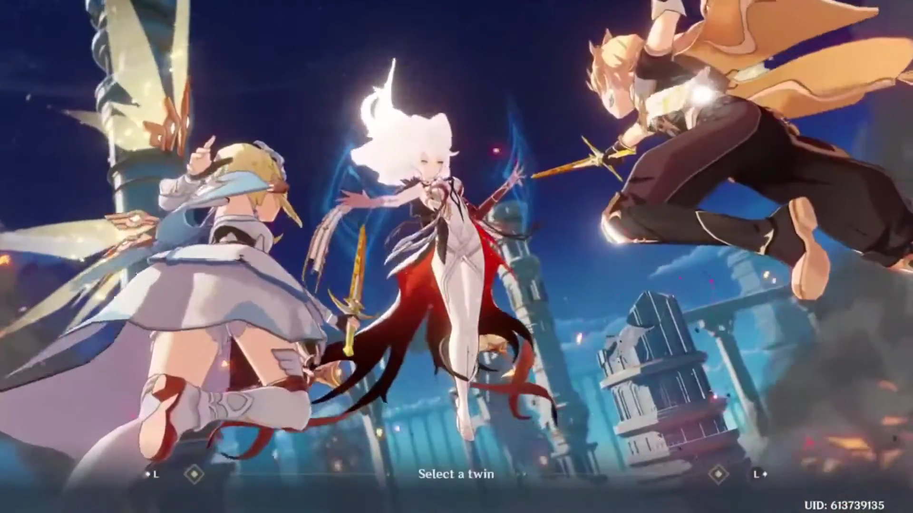

THE LORE OF GENSHIN IMPACT
By Shekinah Rapha D. Villamor
Beyond the Bright Colors of Teyvat
If you just play Genshin Impact casually, you might think it's just a simple story about a traveler helping locals solve their everyday problems. But the actual background lore is surprisingly dark and complicated. When you strip away the bright colors, it's basically a massive story about alien invaders, a brutal battle royale among gods, and a devastating historical cover-up.
The Primordial One and the Heavenly Principles
To really understand Teyvat—the world where the game takes place—you have to go way back before humans even existed. Originally, the world was ruled by seven massive elemental dragons. But then, a being from another world known as the Primordial One showed up. This being fought the dragons in a war that lasted forty years, completely defeated them, and stole their elemental powers. The goal was to terraform the planet and make it a safe place for humanity to live. The Primordial One set up a headquarters floating in the sky called Celestia and laid down the "Heavenly Principles," which are essentially the absolute laws of the universe.
The Archon War and the Seven Archons
Fast forward a bit, and Celestia decided the world needed regional managers. This sparked the Archon War. It wasn't a civilized debate; it was a continent-wide fight for survival where thousands of gods battled for territory. The war finally ended about 2,000 years ago with just seven gods left standing. Celestia declared them the "Seven Archons," gave them each a nation to rule, and handed them a Gnosis—a magical item that connects them to Celestia. As a creepy side note, the game eventually reveals that these items were actually crafted from the remains of yet another alien being.
Khaenri'ah and the Cataclysm
Everything was relatively stable until 500 years ago, which is when the biggest disaster in Teyvat's history happened. Deep underground, a group of humans had built a massive, godless nation called Khaenri'ah. Because they didn't have gods to protect them, they relied on highly advanced robots and bio-alchemy. They were thriving right up until their research accidentally tapped into the "Abyss," a dimension of highly destructive, chaotic energy. Celestia and the Archons viewed this as a threat to the entire planet's survival, so they went underground and completely wiped the nation off the map.
The fallout from this event, known as the Cataclysm, was an absolute nightmare. Abyssal monsters poured out of the ruins and attacked the surface world, killing millions of people and even some of the original Archons. As punishment, Celestia cursed the survivors of Khaenri'ah. Some were turned into terrifying monsters, while others were cursed with an agonizing immortality. Those survivors eventually formed the Abyss Order, a militant faction dedicated to getting revenge on Celestia and destroying the nations of the surface.

The Separated Twins and the Abyss Order
Right in the middle of this historical disaster, two dimension-hopping twins—the player character and their sibling—tried to flee the planet. A mysterious god intercepted them, separated them, and knocked the player into a 500-year coma. When you finally wake up in the present day, you start traveling the world to find your sibling. The big twist is that you eventually find out your twin woke up long before you did, witnessed the horrors of what happened to Khaenri'ah, and is now the leader of the Abyss Order.

The Tsaritsa's Rebellion Against Celestia
Today, the world is a ticking time bomb. The Tsaritsa, the Ice Archon of Snezhnaya, is entirely fed up with Celestia's cruelty. She has sent her military, the Fatui, to forcefully collect the Gnoses from the other six Archons. Her ultimate goal is to use their combined power to wage a massive war against Celestia and tear down the Heavenly Principles once and for all. As the Traveler, you're just trying to reunite your family, but you end up walking right into the middle of a war that has been brewing for centuries.
Chronological Summary of Teyvat's History
- Before Humanity: Seven elemental dragons rule Teyvat until the Primordial One defeats them in a forty-year war and establishes Celestia and the Heavenly Principles.
- 2,000 Years Ago: Thousands of gods fight in the Archon War until only the Seven Archons remain, each receiving a nation and a Gnosis.
- 500 Years Ago: Khaenri'ah taps into the Abyss, triggering the Cataclysm, the destruction of their nation, the rise of the Abyss Order, and the separation of the Traveler twins.
- Present Day: The Tsaritsa and the Fatui collect the Gnoses to wage war against Celestia while the Traveler searches for their twin.